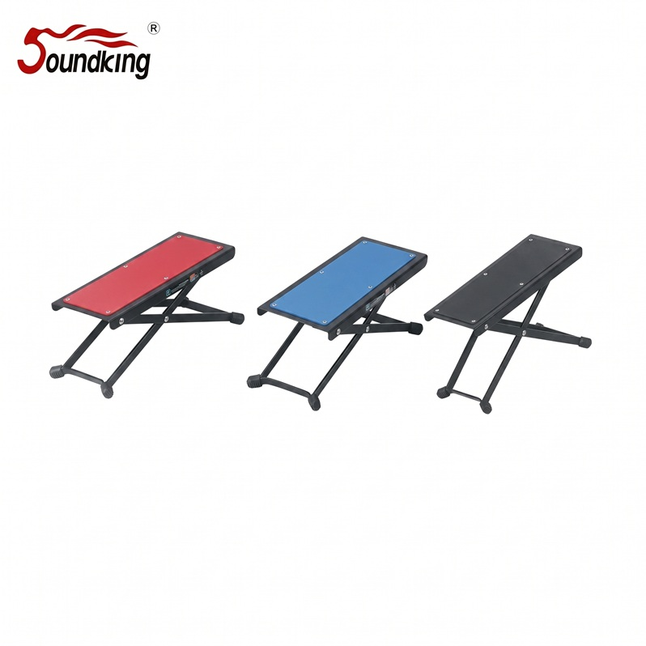

DG001은 클래식 기타·플라멩코 연주 자세에서 왼발을 올려 놓는 기타 풋 스툴입니다. 115–220 mm의 5단계 높이 조절로 연주자의 키와 자세에 최적화할 수 있으며, 상판에 고무 패드가 적용되어 발이 미끄러지지 않습니다.

클래식 기타·플라멩코 연주자를 위한 발 받침. 5단계 높이 조절과 고무 상판으로 올바른 연주 자세를 지원합니다.
DG001은 클래식 기타·플라멩코 연주에서 왼발을 올려 놓는 필수 액세서리인 기타 풋 스툴입니다. 왼발을 올림으로써 기타를 무릎 위에서 적절한 각도로 들 수 있어 올바른 연주 자세를 유지할 수 있으며, 손목 건강에도 좋습니다.
115 mm부터 220 mm까지 5단계 높이 조절이 가능해 연주자의 키·다리 길이·의자 높이에 맞춰 최적화할 수 있으며, 상판에 고무 패드가 적용되어 발이 미끄러지지 않습니다. 빨강·파랑·검정 3가지 색상에서 선택할 수 있고, 3 mm 두께의 스틸 플레이트로 견고합니다.
| 모델명 | DG001 |
|---|---|
| 타입 | Classical Guitar Foot Stool |
| Height | 115 – 220 mm (5단 조절) |
| Color | 빨강 / 파랑 / 검정 |
| Material | Steel 3 mm · 상판 고무 |
| Net Weight | 0.8 kg |
| 권장소비자가 | 14,300 원 / 개 (VAT 포함) |
※ 본 사양 · 단가는 수입원(현대에이브이씨) 2026-01-01 스탠드 가격표 기준입니다.